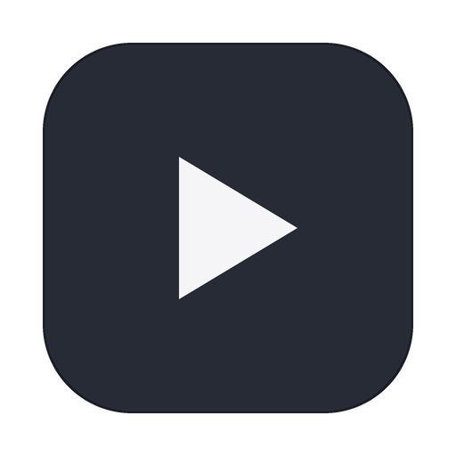

HomeTube Desktop
The desktop app is everything in one: the HomeTube server runs inside it, your library lives on this computer, and phones join over the Wi-Fi with a QR code. No terminal needed.
Install
- Download the latest HomeTube desktop release from
GitHub Releases
—
.dmgfor macOS (Apple Silicon and Intel),.msifor Windows. - macOS: drag HomeTube to Applications, then launch it once via right-click → Open. Because the build is distributed outside the Mac App Store with an ad-hoc signature, Gatekeeper asks you to confirm the first launch — after that it opens normally. If macOS refuses outright: System Settings → Privacy & Security → Open Anyway.
- Windows: run the installer and accept the SmartScreen prompt the same way. Windows builds are experimental — macOS is the polished target.
First run
- The setup wizard asks where your library lives. Point it at the folder that holds your HomeTube downloads (it reports how many items it finds), or pick a fresh folder to start clean.
- Add a face — one per person in the house. Each face gets its own feed, playlists, and resume points on the same library.
- You land on Home. Paste any video, playlist, or podcast link with + Add music — downloads start immediately and everything is ready to play, even offline, once the file lands.
Closing the window keeps HomeTube running in the menu bar (the note icon).
Quit from the menu-bar icon or the app menu to stop the server. Turn on
Start at login in Settings → Preferences to have it always on.
Connect your phone
- Install the HomeTube Android app (APK) on a phone on the same Wi-Fi.
- Open the Devices pane in the desktop app and scan the QR code from the phone's app. The token works once and renews itself while the pane is open.
- The phone now plays straight from your library: one queue of truth for resume points, watched state, and playlists. The Devices pane shows which phones are connected and when they were last seen.
Playback
- Click any song row to queue its list from that point; the transport bar below the window controls everything — shuffle, repeat, seek, queue.
- Native menu shortcuts work even from the menu bar:
⌘Pplay/pause,⌥⌘←/→previous/next,⌘,settings. - Videos resume exactly where your phone left off (and vice versa) — resume state lives on the server, not the device.
- Watched videos are cleaned up automatically after a week unless you mark them keep.
Backup and move
Everything — database and media — lives in the one library folder you
chose. To carry your collection to another machine, export a
.ht archive (Settings → Backup, or ht export from the
CLI) and import it there; .ht files also import into the mobile app's
offline mode.
Troubleshooting
- Phone can't connect: both devices must be on the same network, and macOS may ask to allow incoming connections for HomeTube on first run — click Allow.
- Downloads stuck: Settings shows the server's own diagnostics
(tools, jobs, logs) under Diagnostics. yt-dlp extractors break when
the sites change; update from the CLI with
ht update. - Wrong library: change the data folder in Settings → Preferences, or re-run first-run by resetting the app.